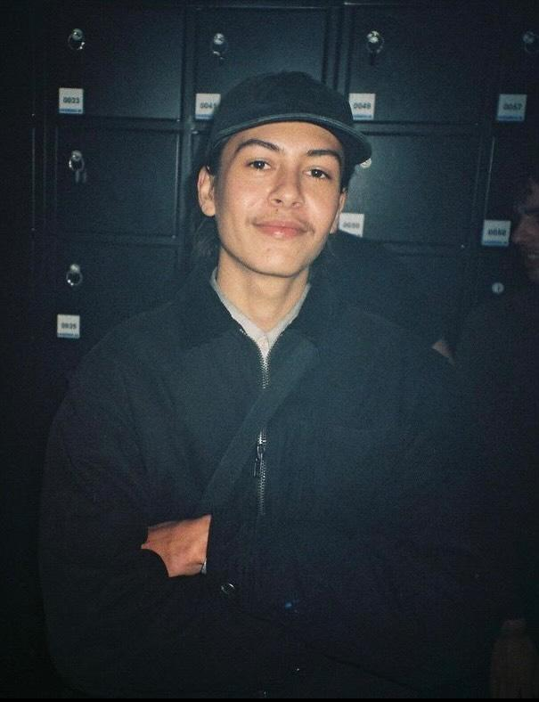

Raised in Bali for his whole life, Bono is currently studying product design at Willem De Kooning Academy Rotterdam.

Here is where you can contact me:
Bono.w.2001@gmail.com
@8.ON.Z
Bono is a designer whose work focuses primarily on the interrelation
between artistic and functional values within Garments and accessories.
His visual language shows inspiration from nature, organisms and
technical outdoor oriented designs. Having an active lifestyle, it is
important that what he creates accompanies his work, his flow and his
personality. At this moment, Bono is still working on finding the balance in combining artisan and technical values in his work.